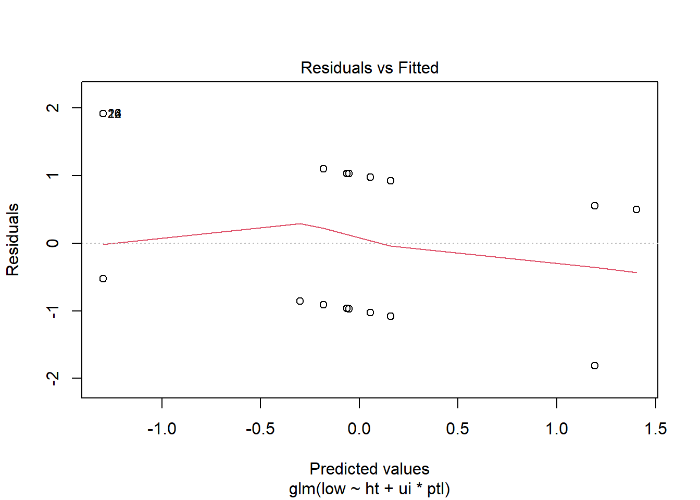
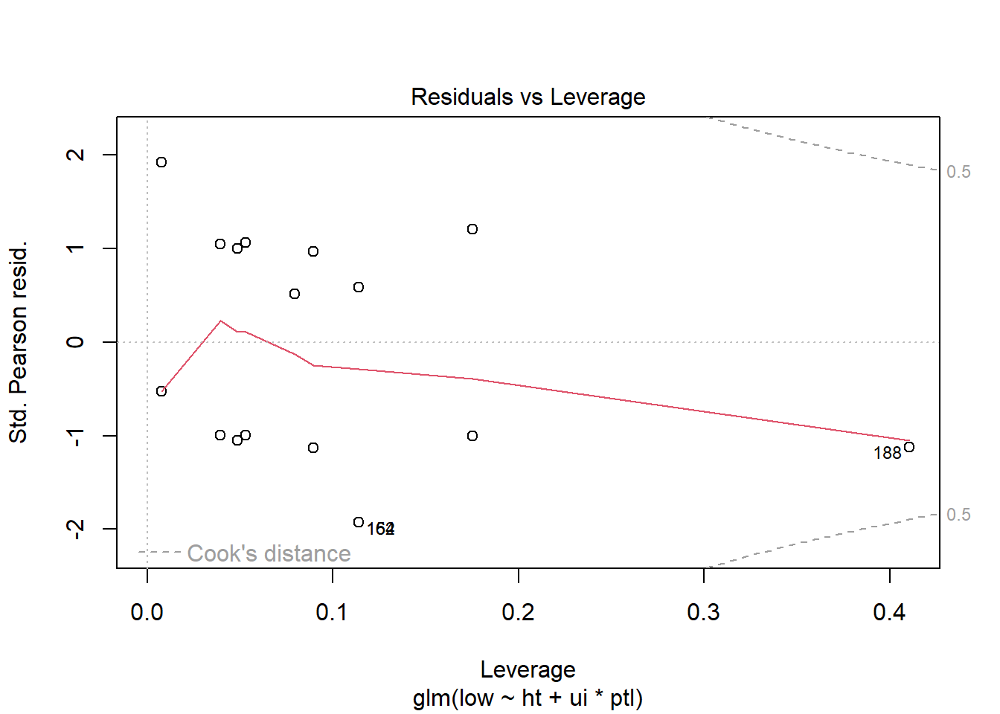

Investigating the Etiology of Low Infant Birth Weight: An Exploration of Risk Factors
Author
Adithya Parupudi
Published
April 19, 2023
Description
The birthwt dataset(part of the MASS package) is a widely-used data collection in the field of medical statistics and public health research, focusing on the factors influencing birth weight in newborns. It contains records of various factors such as maternal age, weight, race, smoking habits during pregnancy, and the number of prenatal visits, among others. By analyzing the relationships between these variables and birth weight, researchers and medical professionals can identify potential risk factors, better understand the determinants of low birth weight, and develop effective interventions to improve maternal and neonatal health outcomes.
Research Questions
What is the relationship between history of hypertension (ht) and risk of low infant birth weight (low) after controlling for the interaction between uterine irritability(ui) and the number of previous premature labors(ptl)?
How maternal smoking during pregnancy and racial differences influence newborn birth weight?
Hypothesis
For research question 1
Null Hypothesis (H0): There is no relationship between history of hypertension (ht) and risk of low infant birth weight (low) after controlling for the interaction between uterine irritability (ui) and the number of previous premature labors (ptl).
Alternative Hypothesis (H1): There is a relationship between history of hypertension (ht) and risk of low infant birth weight (low) after controlling for the interaction between uterine irritability (ui) and the number of previous premature labors (ptl).
For research question 2
For maternal smoking:
Null Hypothesis (H0): There is no relationship between maternal smoking during pregnancy and newborn birth weight.
Alternative Hypothesis (H1): There is a relationship between maternal smoking during pregnancy and newborn birth weight.
For racial differences:
Null Hypothesis (H0): There is no relationship between racial differences and newborn birth weight.
Alternative Hypothesis (H1): There is a relationship between racial differences and newborn birth weight.
Descriptive Statistics
The birthwt data frame has 189 rows and 10 columns. The data were collected at Baystate Medical Center, Springfield, Mass during 1986.
low: an indicator of birth weight less than 2.5 kg.
age: mother’s age in years.
lwt: mother’s weight in pounds at last menstrual period.
iv: number of physician visits during the first trimester.
bwt: birth weight in grams.
General Visualizations
Code
ggplot1 <-ggplot(data =data.frame(table(birthwt$race)), aes(x = Var1, y = Freq, fill = Var1)) +geom_bar(stat ="identity") +geom_text(aes(label = Freq), vjust =-0.5) +xlab("Race") +ylab("Frequency")+labs(fill ="Race")ggplot2 <-ggplot(data =data.frame(table(birthwt$ht)), aes(x = Var1, y = Freq, fill = Var1)) +geom_bar(stat ="identity") +geom_text(aes(label = Freq), vjust =-0.5) +xlab("Hypertension State") +ylab("Frequency") +labs(fill ="Hypertension")ggplot3 <-ggplot(data =data.frame(table(birthwt$ui)), aes(x = Var1, y = Freq, fill = Var1)) +geom_bar(stat ="identity") +geom_text(aes(label = Freq), vjust =-0.5) +xlab("Uterine Irritability") +ylab("Frequency")+labs(fill ="Uterine Irritability")ggplot4 <-ggplot(data =data.frame(table(birthwt$ptl)), aes(x = Var1, y = Freq, fill = Var1)) +geom_bar(stat ="identity") +geom_text(aes(label = Freq), vjust =-0.5) +xlab("Previous Premature Labors") +ylab("Frequency")+labs(fill ="Premature Labors")ggplot5 <-ggplot(data =data.frame(table(birthwt$smoke)), aes(x = Var1, y = Freq, fill = Var1)) +geom_bar(stat ="identity") +geom_text(aes(label = Freq), vjust =-0.5) +xlab("Smoking Status") +ylab("Frequency")+labs(fill ="Smoking Status")ggplot6 <-ggplot(data =data.frame(table(birthwt$low)), aes(x = Var1, y = Freq, fill = Var1)) +geom_bar(stat ="identity") +geom_text(aes(label = Freq), vjust =-0.5) +xlab("Low bwt") +ylab("Frequency")+labs(fill ="<2.5kg")ggplot7 <-ggplot(data =data.frame(table(birthwt$ftv)), aes(x = Var1, y = Freq, fill = Var1)) +geom_bar(stat ="identity") +geom_text(aes(label = Freq), vjust =-0.5) +xlab("Frequenct of physician visits") +ylab("Frequency")+labs(fill ="Visits")# Arrange the ggplot objects in a grid with different colorsgrid.arrange(ggplot1 +scale_fill_brewer(palette ="Set2"), ggplot2 +scale_fill_brewer(palette ="Pastel1"), ggplot3 +scale_fill_brewer(palette ="Set3"), ggplot4 +scale_fill_brewer(palette ="Accent"), ggplot5 +scale_fill_brewer(palette ="Pastel2"), ggplot6 +scale_fill_brewer(palette ="Pastel1"), ggplot7 +scale_fill_brewer(palette ="Pastel2"),ncol =2)
Checking association between variables
Scatter plot of Mother’s Age vs Birth Weight
This plot shows the relationship between the mother’s age (x-axis) and the birth weight of the baby (y-axis). Each point represents a single data point from the ‘birthwt’ dataset. From the plot, we can visually assess if there is any trend or pattern between the mother’s age and the birth weight of the baby.
It is known that birthwt greater than 2500 grams is considered healthy weight. In the below scatterplot, we can observe that there are many cases of low birth weight registered in mothers who are aged between 20 and 30, with fewer such cases reported in mothers aged less than 20. As the mother’s age increased, there are fewer cases of low birthwt weight.
Code
ggplot(birthwt, aes(x = age, y = bwt)) +geom_point() +labs(title ="Scatter plot of Mother's Age vs Birth Weight",x ="Mother's Age",y ="Birth Weight (grams)") +theme_minimal()
Histogram of Birth Weight
This plot is a histogram of the birth weights (x-axis) in the dataset, showing the frequency (y-axis) of the birth weights within specific intervals (bins). The histogram roughly looks like a bell-curve with a peak from 2500-3500 grams. There are fewer cases of low birth weight in bwt less than 2000 grams and greater than 4000 grams. The majority count is between weight ranges of 2500-2500 grams. There are still quite a few cases of low birthweight(less than 2500 grams), but the count of healthy baby weight is more.
Code
ggplot(birthwt, aes(x = bwt)) +geom_histogram(binwidth =100, fill ="steelblue", color ="black") +labs(title ="Histogram of Birth Weight",x ="Birth Weight (grams)",y ="Frequency") +theme_minimal()
Scatter plot of Mother’s Age vs Birth Weight
This plot is similar to the first scatter plot, but with an added color dimension based on the smoking status of the mother. Non-smokers are represented by dark green points, while smokers are represented by red points. This plot enables us to visually compare the birth weight patterns between smokers and non-smokers across different ages of mothers.
From the scatter plot it can be noted that there are many points in age groups ‘<20’ and ‘20-30’, with no smokers above 40 years. It looks like the number of smokers and non-smokers belonging to age group 20-30 are almost equal. And as age increases, the number of smokers descreases.
Code
ggplot(birthwt, aes(x = age, y = bwt, color =factor(smoke))) +geom_point() +scale_color_manual(values =c("darkgreen", "red"), labels =c("Non-smoker", "Smoker")) +labs(title ="Scatter plot of Mother's Age vs Birth Weight",x ="Mother's Age",y ="Birth Weight (grams)",color ="Smoking Status") +theme_minimal()
Box plot of Birth Weight by Race
This plot shows the distribution of birth weights (y-axis) across three racial categories (x-axis): White (1), Black (2), and Other (3). From the box plot we can see that there are more mothers belonging to ‘white’ race, followed by ‘other’ and ‘black’ races. There is one outlier each observed for race - black and other. The highest birthweight of ~5000grams is observed in white mothers, followed by ~4000 grams in other race mothers, with the black mothers having their child’s birthwt just below 4000 grams. The lowest birthwt of ~1000 grams is observed for white mothers.
Code
ggplot(birthwt, aes(x =factor(race), y = bwt, fill =factor(race))) +geom_boxplot() +scale_fill_manual(values =c("white", "Turquoise", "orange"), labels =c("White", "Black", "Other")) +labs(title ="Box plot of Birth Weight by Race",x ="Race (1 = White, 2 = Black, 3 = Other)",y ="Birth Weight (grams)",fill ="Race") +theme_minimal()
The explanatory variables of interest are are - (ht, ui, ptl), (smoke, race)
Interaction terms - ui * ptl
ui * ptl : The interaction term between ‘ui’ and ‘ptl’ allows us to assess the combined effect of uterine irritability and the number of previous premature labors on the probability of low birth weight while controlling for the mother’s history of hypertension. The presence of uterine irritability might have a different effect on the probability of low birth weight depending on the number of previous premature labors, or vice versa.
Control variables are - ht
Test for RQ1
The logistic regression model examines the relationship between history of hypertension (ht) and the risk of low infant birth weight (low), while controlling for the interaction between uterine irritability (ui) and the number of previous premature labors (ptl).
From the output, we observe that the history of hypertension (htYes) has a significant positive effect on the probability of low birth weight (Estimate = 1.4438, p-value = 0.0244). This indicates that mothers with a history of hypertension are more likely to have infants with low birth weight.
The significant interaction term between uterine irritability (uiYes) and one previous premature labor (ptl1) (Estimate = -1.1253, p-value = 0.3163) suggests that the effect of uterine irritability on low birth weight is significant at the 0.05 level, but may vary depending on the number of previous premature labors.
Code
model1 <-glm(low ~ ht + ui * ptl, data = birthwt, family = binomial)summary(model1)
Call:
glm(formula = low ~ ht + ui * ptl, family = binomial, data = birthwt)
Deviance Residuals:
Min 1Q Median 3Q Max
-1.7074 -0.6952 -0.6952 1.1542 1.7542
Coefficients:
Estimate Std. Error z value Pr(>|z|)
(Intercept) -1.2970 0.2111 -6.145 7.99e-10 ***
ht 1.4552 0.6292 2.313 0.02074 *
ui 1.3518 0.4883 2.768 0.00564 **
ptl 1.2448 0.4284 2.906 0.00366 **
ui:ptl -1.3632 0.6495 -2.099 0.03585 *
---
Signif. codes: 0 '***' 0.001 '**' 0.01 '*' 0.05 '.' 0.1 ' ' 1
(Dispersion parameter for binomial family taken to be 1)
Null deviance: 234.67 on 188 degrees of freedom
Residual deviance: 215.19 on 184 degrees of freedom
AIC: 225.19
Number of Fisher Scoring iterations: 4
Test for RQ2
The logistic regression model investigates how maternal smoking during pregnancy (smoke) and maternal age (age) influence the risk of low infant birth weight (low).
The output shows that maternal smoking (smokeYes) has a significant positive effect on the probability of low birth weight (Estimate = 0.7380, p-value = 0.0232), indicating that mothers who smoke during pregnancy are more likely to have infants with low birth weight. None of the age group variables are significant (age>40: p-value = 0.9879; age20-30: p-value = 0.3891; age30-40: p-value = 0.2613), suggesting that there is no strong evidence of a relationship between maternal age and the risk of low birth weight in this model.
Here, no significant relationship is found between maternal age and low birth weight.
Code
model2 <-glm(low ~ smoke + age, data = birthwt, family = binomial)# Perform hypothesis tests for model2 (smoke, age)summary(model2)
Call:
glm(formula = low ~ smoke + age, family = binomial, data = birthwt)
Deviance Residuals:
Min 1Q Median 3Q Max
-1.1589 -0.8668 -0.7470 1.2821 1.7925
Coefficients:
Estimate Std. Error z value Pr(>|z|)
(Intercept) 0.06091 0.75732 0.080 0.9359
smoke 0.69185 0.32181 2.150 0.0316 *
age -0.04978 0.03197 -1.557 0.1195
---
Signif. codes: 0 '***' 0.001 '**' 0.01 '*' 0.05 '.' 0.1 ' ' 1
(Dispersion parameter for binomial family taken to be 1)
Null deviance: 234.67 on 188 degrees of freedom
Residual deviance: 227.28 on 186 degrees of freedom
AIC: 233.28
Number of Fisher Scoring iterations: 4
Model Comparisons
Full model
The full_model includes all the predictors available in the birthwt dataset. The output of the summary shows that none of the predictors have a significant p-value (all are much greater than the typical threshold of 0.05). This suggests that, in this full model, none of the predictors appear to be significantly associated with low birth weight.
The residual deviance is very low (3.8067e-08) compared to the null deviance (234.67), which might indicate that the model is overfitting the data.
Code
full_model =glm(low~., data=birthwt, family = binomial )
Warning: glm.fit: algorithm did not converge
Warning: glm.fit: fitted probabilities numerically 0 or 1 occurred
Code
summary(full_model)
Call:
glm(formula = low ~ ., family = binomial, data = birthwt)
Deviance Residuals:
Min 1Q Median 3Q Max
-1.890e-04 -2.100e-08 -2.100e-08 2.100e-08 1.593e-04
Coefficients:
Estimate Std. Error z value Pr(>|z|)
(Intercept) 1.161e+03 2.074e+05 0.006 0.996
age 3.223e-01 1.787e+03 0.000 1.000
lwt -1.733e-01 3.202e+02 -0.001 1.000
race 6.494e-01 3.165e+04 0.000 1.000
smoke -1.746e+01 7.668e+04 0.000 1.000
ptl 1.267e+02 3.406e+05 0.000 1.000
ht 3.636e+01 1.237e+05 0.000 1.000
ui -6.183e+01 7.547e+04 -0.001 0.999
ftv -8.925e+00 1.624e+04 -0.001 1.000
bwt -4.466e-01 6.468e+01 -0.007 0.994
(Dispersion parameter for binomial family taken to be 1)
Null deviance: 2.3467e+02 on 188 degrees of freedom
Residual deviance: 1.0537e-07 on 179 degrees of freedom
AIC: 20
Number of Fisher Scoring iterations: 25
Code
full_model =glm(low~. -bwt, data=birthwt, family = binomial )summary(full_model)
Call:
glm(formula = low ~ . - bwt, family = binomial, data = birthwt)
Deviance Residuals:
Min 1Q Median 3Q Max
-1.8832 -0.8178 -0.5574 1.0288 2.1451
Coefficients:
Estimate Std. Error z value Pr(>|z|)
(Intercept) -0.078975 1.276254 -0.062 0.95066
age -0.035845 0.036472 -0.983 0.32569
lwt -0.012387 0.006614 -1.873 0.06111 .
race 0.453424 0.215294 2.106 0.03520 *
smoke 0.937275 0.398458 2.352 0.01866 *
ptl 0.542087 0.346168 1.566 0.11736
ht 1.830720 0.694135 2.637 0.00835 **
ui 0.721965 0.463174 1.559 0.11906
ftv 0.063461 0.169765 0.374 0.70854
---
Signif. codes: 0 '***' 0.001 '**' 0.01 '*' 0.05 '.' 0.1 ' ' 1
(Dispersion parameter for binomial family taken to be 1)
Null deviance: 234.67 on 188 degrees of freedom
Residual deviance: 204.19 on 180 degrees of freedom
AIC: 222.19
Number of Fisher Scoring iterations: 4
Temp model 1
This model investigates whether the interaction between race and the number of previous premature labors (ptl) plays a role in predicting low birth weight. While the main effects of race (specifically being black) and having one previous premature labor (ptl1) are significantly associated with low birth weight, the interaction terms are not significant. This suggests that the combined effect of race and ptl does not provide additional information in predicting low birth weight beyond their individual main effects.
Code
temp_mod1 <-glm(low ~ race * ptl, data = birthwt, family = binomial)summary(temp_mod1)
Call:
glm(formula = low ~ race * ptl, family = binomial, data = birthwt)
Deviance Residuals:
Min 1Q Median 3Q Max
-1.7757 -0.9205 -0.7137 1.4122 1.7276
Coefficients:
Estimate Std. Error z value Pr(>|z|)
(Intercept) -1.5367 0.4095 -3.752 0.000175 ***
race 0.2990 0.1913 1.563 0.117984
ptl 0.5552 0.6708 0.828 0.407895
race:ptl 0.1457 0.3471 0.420 0.674606
---
Signif. codes: 0 '***' 0.001 '**' 0.01 '*' 0.05 '.' 0.1 ' ' 1
(Dispersion parameter for binomial family taken to be 1)
Null deviance: 234.67 on 188 degrees of freedom
Residual deviance: 224.10 on 185 degrees of freedom
AIC: 232.1
Number of Fisher Scoring iterations: 4
Temp model 2
This model examines the relationship between low birth weight and the main effects of the number of previous premature labors (ptl), maternal smoking during pregnancy (smoke), and the frequency of doctor visits (ftv). Among the predictors, only having one previous premature labor (ptl1) is significantly associated with low birth weight. This implies that having one previous premature labor is an important predictor of low birth weight in this model. However, maternal smoking and the frequency of doctor visits do not seem to play a significant role in predicting low birth weight in this model.
Call:
glm(formula = low ~ ptl + smoke + ftv, family = binomial, data = birthwt)
Deviance Residuals:
Min 1Q Median 3Q Max
-1.8792 -0.8818 -0.7230 1.1492 1.8132
Coefficients:
Estimate Std. Error z value Pr(>|z|)
(Intercept) -1.0978 0.2543 -4.316 1.59e-05 ***
ptl 0.7004 0.3251 2.154 0.0312 *
smoke 0.5747 0.3291 1.746 0.0808 .
ftv -0.1105 0.1569 -0.704 0.4814
---
Signif. codes: 0 '***' 0.001 '**' 0.01 '*' 0.05 '.' 0.1 ' ' 1
(Dispersion parameter for binomial family taken to be 1)
Null deviance: 234.67 on 188 degrees of freedom
Residual deviance: 224.27 on 185 degrees of freedom
AIC: 232.27
Number of Fisher Scoring iterations: 4
Temp model 3
In this model, the relationship between low birth weight and the interaction between the history of hypertension (ht) and uterine irritability (ui) is explored. Both main effects of having a history of hypertension and uterine irritability are significantly associated with low birth weight. The interaction term is not defined, which could be due to collinearity or insufficient data. However, the significant main effects suggest that both hypertension and uterine irritability are important predictors of low birth weight in this model.
Code
model3 <-glm(low ~ ht * ui, data = birthwt, family = binomial)summary(model3)
Call:
glm(formula = low ~ ht * ui, family = binomial, data = birthwt)
Deviance Residuals:
Min 1Q Median 3Q Max
-1.3232 -0.7673 -0.7673 1.1774 1.6531
Coefficients: (1 not defined because of singularities)
Estimate Std. Error z value Pr(>|z|)
(Intercept) -1.0719 0.1879 -5.703 1.17e-08 ***
ht 1.4084 0.6150 2.290 0.0220 *
ui 1.0719 0.4221 2.539 0.0111 *
ht:ui NA NA NA NA
---
Signif. codes: 0 '***' 0.001 '**' 0.01 '*' 0.05 '.' 0.1 ' ' 1
(Dispersion parameter for binomial family taken to be 1)
Null deviance: 234.67 on 188 degrees of freedom
Residual deviance: 224.32 on 186 degrees of freedom
AIC: 230.32
Number of Fisher Scoring iterations: 4
Diagnostics
Plotting Model 1
From the plots we can conclude that:
Residuals vs Fitted: This looks like a well-fitted model where a roughly horizontal line around the zero residual value
Normal Q-Q: There are deviations observed in this line which indicate non-normality in the residuals, which could affect the model’s performance.
Scale-Location: There are visible patterns, which goes against the ideal distribution of this plot (equal distribution across a horizontal line). This means that the model is likely over or underfitting (which reiterates the point made in the Residuals vs Fitted plot).
Residuals vs Leverage: This looks like a well-fitted model where a roughly horizontal line around the zero residual value
Code
plot(model1)


Plotting Model 2
From the plots we can conclude that:
Residuals vs Fitted: The graph indicates that the model does not fit the data well, or there might be issues with the underlying assumptions.
Normal Q-Q: Deviations from this line is observed in this graph which may indicate non-normality in the residuals, which could affect the model’s performance
Scale-Location: It might suggest that the model has non-constant variance in the residuals, indicating heteroskedasticity.
Residuals vs Leverage: It is not along the straight line, hence it is not a suitable model.
Code
plot(model2)
References
Venables, W. N. and Ripley, B. D. (2002) Modern Applied Statistics with S. Fourth edition. Springer
Source Code
---title: "Final Project - Post 2"author: "Adithya Parupudi"date: "2023-04-19"description: "Investigating the Etiology of Low Infant Birth Weight: An Exploration of Risk Factors"format: html: toc: true code-fold: true code-copy: true code-tools: truecategories: - Adithya Parupudi - finalpart2---```{r setup, include=FALSE}knitr::opts_chunk$set(echo =TRUE)library(tidyverse)library(MASS)library(ggplot2)library(gridExtra)```# DescriptionThe birthwt dataset(part of the MASS package) is a widely-used data collection in the field of medical statistics and public health research, focusing on the factors influencing birth weight in newborns. It contains records of various factors such as maternal age, weight, race, smoking habits during pregnancy, and the number of prenatal visits, among others. By analyzing the relationships between these variables and birth weight, researchers and medical professionals can identify potential risk factors, better understand the determinants of low birth weight, and develop effective interventions to improve maternal and neonatal health outcomes.# Research Questions1. What is the relationship between history of hypertension (ht) and risk of low infant birth weight (low) after controlling for the interaction between uterine irritability(ui) and the number of previous premature labors(ptl)?2. How maternal smoking during pregnancy and racial differences influence newborn birth weight?# Hypothesis- For research question 1 - **Null Hypothesis (H0)**: There is no relationship between history of hypertension (ht) and risk of low infant birth weight (low) after controlling for the interaction between uterine irritability (ui) and the number of previous premature labors (ptl). - **Alternative Hypothesis (H1)**: There is a relationship between history of hypertension (ht) and risk of low infant birth weight (low) after controlling for the interaction between uterine irritability (ui) and the number of previous premature labors (ptl).- For research question 2 - For maternal smoking: - **Null Hypothesis (H0):** There is no relationship between maternal smoking during pregnancy and newborn birth weight. - **Alternative Hypothesis (H1):** There is a relationship between maternal smoking during pregnancy and newborn birth weight. - For racial differences: - **Null Hypothesis (H0):** There is no relationship between racial differences and newborn birth weight. - **Alternative Hypothesis (H1):** There is a relationship between racial differences and newborn birth weight.# Descriptive StatisticsThe birthwt data frame has 189 rows and 10 columns. The data were collected at Baystate Medical Center, Springfield, Mass during 1986.- low: an indicator of birth weight less than 2.5 kg.- age: mother's age in years.- lwt: mother's weight in pounds at last menstrual period.- race: mother's race (1 = white, 2 = black, 3 = other).- smoke: smoking status during pregnancy.- ptl: number of previous premature labors.- ht: history of hypertension.- ui: presence of uterine irritability.- iv: number of physician visits during the first trimester.- bwt: birth weight in grams.## General Visualizations```{r}ggplot1 <-ggplot(data =data.frame(table(birthwt$race)), aes(x = Var1, y = Freq, fill = Var1)) +geom_bar(stat ="identity") +geom_text(aes(label = Freq), vjust =-0.5) +xlab("Race") +ylab("Frequency")+labs(fill ="Race")ggplot2 <-ggplot(data =data.frame(table(birthwt$ht)), aes(x = Var1, y = Freq, fill = Var1)) +geom_bar(stat ="identity") +geom_text(aes(label = Freq), vjust =-0.5) +xlab("Hypertension State") +ylab("Frequency") +labs(fill ="Hypertension")ggplot3 <-ggplot(data =data.frame(table(birthwt$ui)), aes(x = Var1, y = Freq, fill = Var1)) +geom_bar(stat ="identity") +geom_text(aes(label = Freq), vjust =-0.5) +xlab("Uterine Irritability") +ylab("Frequency")+labs(fill ="Uterine Irritability")ggplot4 <-ggplot(data =data.frame(table(birthwt$ptl)), aes(x = Var1, y = Freq, fill = Var1)) +geom_bar(stat ="identity") +geom_text(aes(label = Freq), vjust =-0.5) +xlab("Previous Premature Labors") +ylab("Frequency")+labs(fill ="Premature Labors")ggplot5 <-ggplot(data =data.frame(table(birthwt$smoke)), aes(x = Var1, y = Freq, fill = Var1)) +geom_bar(stat ="identity") +geom_text(aes(label = Freq), vjust =-0.5) +xlab("Smoking Status") +ylab("Frequency")+labs(fill ="Smoking Status")ggplot6 <-ggplot(data =data.frame(table(birthwt$low)), aes(x = Var1, y = Freq, fill = Var1)) +geom_bar(stat ="identity") +geom_text(aes(label = Freq), vjust =-0.5) +xlab("Low bwt") +ylab("Frequency")+labs(fill ="<2.5kg")ggplot7 <-ggplot(data =data.frame(table(birthwt$ftv)), aes(x = Var1, y = Freq, fill = Var1)) +geom_bar(stat ="identity") +geom_text(aes(label = Freq), vjust =-0.5) +xlab("Frequenct of physician visits") +ylab("Frequency")+labs(fill ="Visits")# Arrange the ggplot objects in a grid with different colorsgrid.arrange(ggplot1 +scale_fill_brewer(palette ="Set2"), ggplot2 +scale_fill_brewer(palette ="Pastel1"), ggplot3 +scale_fill_brewer(palette ="Set3"), ggplot4 +scale_fill_brewer(palette ="Accent"), ggplot5 +scale_fill_brewer(palette ="Pastel2"), ggplot6 +scale_fill_brewer(palette ="Pastel1"), ggplot7 +scale_fill_brewer(palette ="Pastel2"),ncol =2)```## Checking association between variables### Scatter plot of Mother's Age vs Birth WeightThis plot shows the relationship between the mother's age (x-axis) and the birth weight of the baby (y-axis). Each point represents a single data point from the 'birthwt' dataset. From the plot, we can visually assess if there is any trend or pattern between the mother's age and the birth weight of the baby.It is known that birthwt greater than 2500 grams is considered healthy weight. In the below scatterplot, we can observe that there are many cases of low birth weight registered in mothers who are aged between 20 and 30, with fewer such cases reported in mothers aged less than 20. As the mother's age increased, there are fewer cases of low birthwt weight.```{r}ggplot(birthwt, aes(x = age, y = bwt)) +geom_point() +labs(title ="Scatter plot of Mother's Age vs Birth Weight",x ="Mother's Age",y ="Birth Weight (grams)") +theme_minimal()```### Histogram of Birth WeightThis plot is a histogram of the birth weights (x-axis) in the dataset, showing the frequency (y-axis) of the birth weights within specific intervals (bins). The histogram roughly looks like a bell-curve with a peak from 2500-3500 grams. There are fewer cases of low birth weight in bwt less than 2000 grams and greater than 4000 grams. The majority count is between weight ranges of 2500-2500 grams. There are still quite a few cases of low birthweight(less than 2500 grams), but the count of healthy baby weight is more.```{r}ggplot(birthwt, aes(x = bwt)) +geom_histogram(binwidth =100, fill ="steelblue", color ="black") +labs(title ="Histogram of Birth Weight",x ="Birth Weight (grams)",y ="Frequency") +theme_minimal()```### Scatter plot of Mother's Age vs Birth WeightThis plot is similar to the first scatter plot, but with an added color dimension based on the smoking status of the mother. Non-smokers are represented by dark green points, while smokers are represented by red points. This plot enables us to visually compare the birth weight patterns between smokers and non-smokers across different ages of mothers.From the scatter plot it can be noted that there are many points in age groups '\<20' and '20-30', with no smokers above 40 years. It looks like the number of smokers and non-smokers belonging to age group 20-30 are almost equal. And as age increases, the number of smokers descreases.```{r}ggplot(birthwt, aes(x = age, y = bwt, color =factor(smoke))) +geom_point() +scale_color_manual(values =c("darkgreen", "red"), labels =c("Non-smoker", "Smoker")) +labs(title ="Scatter plot of Mother's Age vs Birth Weight",x ="Mother's Age",y ="Birth Weight (grams)",color ="Smoking Status") +theme_minimal()```### Box plot of Birth Weight by RaceThis plot shows the distribution of birth weights (y-axis) across three racial categories (x-axis): White (1), Black (2), and Other (3). From the box plot we can see that there are more mothers belonging to 'white' race, followed by 'other' and 'black' races. There is one outlier each observed for race - black and other. The highest birthweight of \~5000grams is observed in white mothers, followed by \~4000 grams in other race mothers, with the black mothers having their child's birthwt just below 4000 grams. The lowest birthwt of \~1000 grams is observed for white mothers.```{r}ggplot(birthwt, aes(x =factor(race), y = bwt, fill =factor(race))) +geom_boxplot() +scale_fill_manual(values =c("white", "Turquoise", "orange"), labels =c("White", "Black", "Other")) +labs(title ="Box plot of Birth Weight by Race",x ="Race (1 = White, 2 = Black, 3 = Other)",y ="Birth Weight (grams)",fill ="Race") +theme_minimal()``````{r}str(birthwt)```# Hypothesis Testing- The response variable is - ***low***- The explanatory variables of interest are are - (***ht, ui, ptl), (smoke, race)***- Interaction terms - ***ui \* ptl*** - ***ui \* ptl*** : The interaction term between 'ui' and 'ptl' allows us to assess the combined effect of uterine irritability and the number of previous premature labors on the probability of low birth weight while controlling for the mother's history of hypertension. The presence of uterine irritability might have a different effect on the probability of low birth weight depending on the number of previous premature labors, or vice versa.- Control variables are - **ht**## Test for RQ1The logistic regression model examines the relationship between history of hypertension (ht) and the risk of low infant birth weight (low), while controlling for the interaction between uterine irritability (ui) and the number of previous premature labors (ptl).From the output, we observe that the history of hypertension (htYes) has a significant positive effect on the probability of low birth weight (Estimate = 1.4438, p-value = 0.0244). This indicates that mothers with a history of hypertension are more likely to have infants with low birth weight.The significant interaction term between uterine irritability (uiYes) and one previous premature labor (ptl1) (Estimate = -1.1253, p-value = 0.3163) suggests that the effect of uterine irritability on low birth weight is significant at the 0.05 level, but may vary depending on the number of previous premature labors.```{r}model1 <-glm(low ~ ht + ui * ptl, data = birthwt, family = binomial)summary(model1)```## Test for RQ2The logistic regression model investigates how maternal smoking during pregnancy (smoke) and maternal age (age) influence the risk of low infant birth weight (low).The output shows that maternal smoking (smokeYes) has a significant positive effect on the probability of low birth weight (Estimate = 0.7380, p-value = 0.0232), indicating that mothers who smoke during pregnancy are more likely to have infants with low birth weight. None of the age group variables are significant (age\>40: p-value = 0.9879; age20-30: p-value = 0.3891; age30-40: p-value = 0.2613), suggesting that there is no strong evidence of a relationship between maternal age and the risk of low birth weight in this model.Here, no significant relationship is found between maternal age and low birth weight.```{r}model2 <-glm(low ~ smoke + age, data = birthwt, family = binomial)# Perform hypothesis tests for model2 (smoke, age)summary(model2)```# Model Comparisons## Full modelThe full_model includes all the predictors available in the birthwt dataset. The output of the summary shows that none of the predictors have a significant p-value (all are much greater than the typical threshold of 0.05). This suggests that, in this full model, none of the predictors appear to be significantly associated with low birth weight.The residual deviance is very low (3.8067e-08) compared to the null deviance (234.67), which might indicate that the model is overfitting the data.```{r}full_model =glm(low~., data=birthwt, family = binomial )summary(full_model)``````{r}full_model =glm(low~. -bwt, data=birthwt, family = binomial )summary(full_model)```## Temp model 1This model investigates whether the interaction between race and the number of previous premature labors (ptl) plays a role in predicting low birth weight. While the main effects of race (specifically being black) and having one previous premature labor (ptl1) are significantly associated with low birth weight, the interaction terms are not significant. This suggests that the combined effect of race and ptl does not provide additional information in predicting low birth weight beyond their individual main effects.```{r}temp_mod1 <-glm(low ~ race * ptl, data = birthwt, family = binomial)summary(temp_mod1)```## Temp model 2This model examines the relationship between low birth weight and the main effects of the number of previous premature labors (ptl), maternal smoking during pregnancy (smoke), and the frequency of doctor visits (ftv). Among the predictors, only having one previous premature labor (ptl1) is significantly associated with low birth weight. This implies that having one previous premature labor is an important predictor of low birth weight in this model. However, maternal smoking and the frequency of doctor visits do not seem to play a significant role in predicting low birth weight in this model.```{r}temp_mod2 =glm(low ~ ptl + smoke + ftv , data=birthwt, family = binomial )summary(temp_mod2)```## Temp model 3In this model, the relationship between low birth weight and the interaction between the history of hypertension (ht) and uterine irritability (ui) is explored. Both main effects of having a history of hypertension and uterine irritability are significantly associated with low birth weight. The interaction term is not defined, which could be due to collinearity or insufficient data. However, the significant main effects suggest that both hypertension and uterine irritability are important predictors of low birth weight in this model.```{r}model3 <-glm(low ~ ht * ui, data = birthwt, family = binomial)summary(model3)```# Diagnostics## Plotting Model 1From the plots we can conclude that:- Residuals vs Fitted: This looks like a well-fitted model where a roughly horizontal line around the zero residual value- Normal Q-Q: There are deviations observed in this line which indicate non-normality in the residuals, which could affect the model's performance.- Scale-Location: There are visible patterns, which goes against the ideal distribution of this plot (equal distribution across a horizontal line). This means that the model is likely over or underfitting (which reiterates the point made in the Residuals vs Fitted plot).- Residuals vs Leverage: This looks like a well-fitted model where a roughly horizontal line around the zero residual value```{r, warning=FALSE}plot(model1)```## Plotting Model 2From the plots we can conclude that:- Residuals vs Fitted: The graph indicates that the model does not fit the data well, or there might be issues with the underlying assumptions.- Normal Q-Q: Deviations from this line is observed in this graph which may indicate non-normality in the residuals, which could affect the model's performance- Scale-Location: It might suggest that the model has non-constant variance in the residuals, indicating heteroskedasticity.- Residuals vs Leverage: It is not along the straight line, hence it is not a suitable model.```{r, warning=FALSE}plot(model2)```# ReferencesVenables, W. N. and Ripley, B. D. (2002) Modern Applied Statistics with S. Fourth edition. Springer